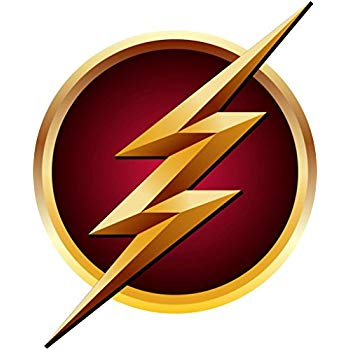 SCARLET SPEEDSTER
HOME
Discuss
Series
Breaking Bad
Game of Thrones
Vikings
The Flash
Rick and Morty
Mr. Robot
Character's
THE FLASH
LIFE DOESN'T GIVE US PURPOSE, WE GIVE LIFE PURPOSE.
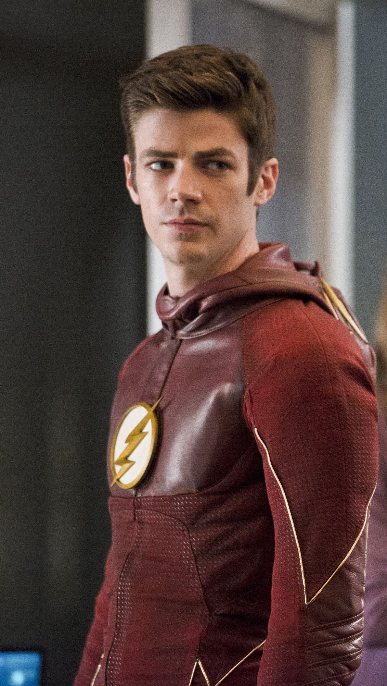
“
Bartholomew Henry "Barry" Allen (born March 14, 1989) is a former private investigator and a scientist in the Criminal and Forensic Science Division of the Central City Police Department. Barry's mother was murdered when he was 11 years old on March 18, 2000 and the blame was wrongfully placed on his father. He was taken in by Joe West and he dedicated his life to proving his father's innocence. After the S.T.A.R. Labs particle accelerator exploded, causing a giant thundercloud to form, Barry was struck by lightning from this cloud, falling into a coma for nine months. When he woke up from his coma, he discovered that he had developed superhuman speed and various other abilities derived from it. Using these super powers, he began acting as a meta-human vigilante and superhero known as The Flash (initially referred to by the media as the Red Streak or The Streak) stylized as the "Scarlet Speedster"
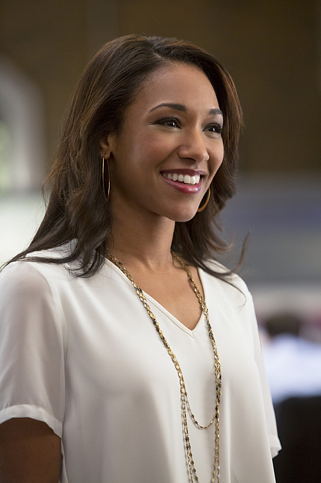
“
Iris Ann West-Allen (born June 24, 1989) is the co-leader of Team Flash, a former journalist for Central City Picture News, a former waitress at CC Jitters, and a psychology graduate student. Iris is also the daughter of Joe and the late Francine West, the sister of Wally West, the fiancée of the late-Eddie Thawne, the wife of Barry Allen, and the mother of her future daughter Nora Allen. In the Flashpoint timeline, Iris and Joe seemed to have some tension since Iris didn't know about Francine being alive. She also knew that Wally was the Flash and they formed a brother-sister crime-fighting duo. After Flashpoint was removed from existence when Barry let Eobard Thawne kill Nora Allen in an attempt to restore the original timeline, Iris was estranged from her father Joe only to reconnect after hearing of Barry's time traveling. The life of Iris was later threatened by a powerful villain named Savitar, which they could foresee due to Barry accidentally traveling into the future trying to trap the villain, which was a future time remnant of Barry. Iris survived thanks to the sacrifice of H.R Wells, and in the final battle, she killed Savitar, erasing him from existence
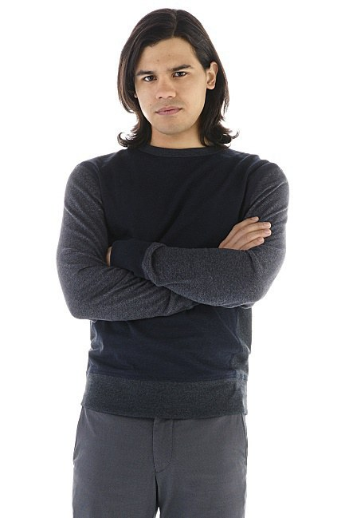
Francisco "Cisco" Ramon, nicknamed Vibe by Barry Allen, is a mechanical engineering genius and a meta-human at S.T.A.R. Labs, also formerly serving as the prison guard to their makeshift prison. He came from a rather poor Puerto Rican family, and provides much-needed comic relief around his stiff workplace. Cisco is also a member of Team Flash. He was also friends with Harrison Wells before learning his true identity as Eobard Thawne, though Eobard looked at Cisco as a surrogate son before and after his reveal. He also developed a rivalry with Hartley Rathaway and a friendly relationship with Ray Palmer. Cisco was also affected by the particle accelerator, causing him to become a meta-human with the ability to manipulate the vibrational energy of reality, although he wasn't aware of his powers until nearly two years had passed since the accident. He was in a relationship with Gypsy for several months until they broke up
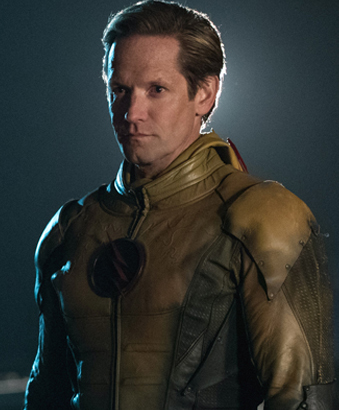
Professor Eobard Thawne (born c. 2151), also known as the Reverse-Flash, is a meta-human speedster from the twenty-second century, a descendant of the late Eddie Thawne, a time criminal, and the archenemy of Barry Allen/The Flash. Obsessed with the twenty-first century's Flash, Eobard recreated the accident that was behind the Flash's powers and became a speedster himself. But after his very first trip back in time, Eobard learned that he was destined to become the Flash's archenemy and grew to despise the hero, attempting to prove his superiority as the Reverse-Flash and therefore became the opposite of his former idol. Since then, the two speedsters battled each other for many years, but neither of them were strong or fast enough to defeat each other.
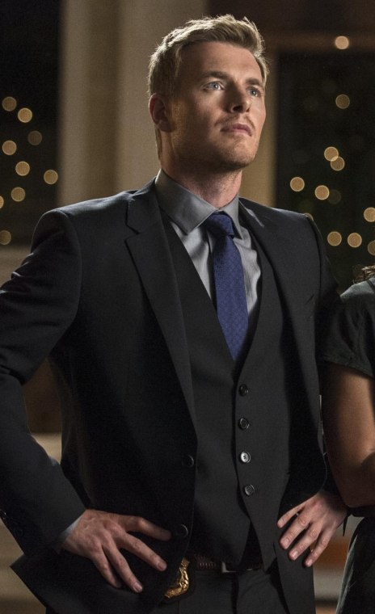
Eddie Thawne (died May 19, 2015) was a police detective of the Keystone City Police Department until he transferred to Central City Police Department. He was the partner of Joe West, the fiancé of Iris West, a good friend of Barry Allen and an ancestor of Eobard Thawne. Nicknamed Detective Pretty Boy by Joe, he was one of the first police officers in the CCPD to learn of the existence of meta-humans - second only to Joe - and eventually learned of Barry's secret identity as the Flash. Learning he would be Eobard's ancestor, Eddie would later sacrifice himself to erase the Reverse-Flash's existence, saving his friends' lives and preventing any further harm to Central City and to time itself
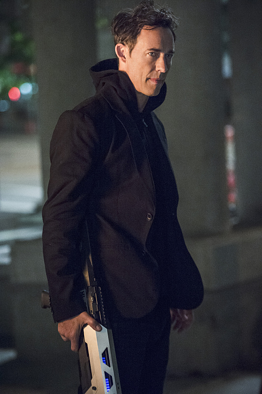
Dr. Harrison "Harry" Wells is the founder of S.T.A.R. Labs on Earth Two and the father of Jesse Wells who was taken by the meta-human criminal Zoom. Harry then traveled to Earth One, joining the team led by Barry Allen to take down Zoom. While he was at one point forced to work as a mole for Zoom, Harry eventually turned on the speedster criminal, and with the help of Barry Allen and Cisco Ramon, freed his daughter from captivity. He continued working with Team Flash as its main scientific mind to defeat Zoom before returning to Earth Two with his daughter and Jay Garrick after Zoom was no more.
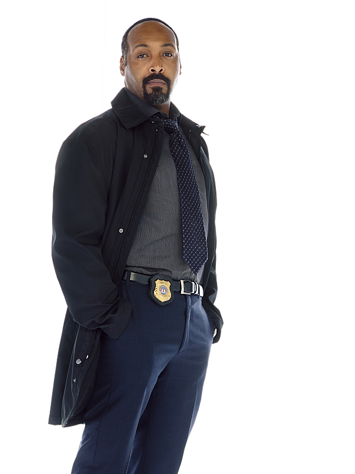
"You always want to be the person who sees the best in people. I have been a cop for twenty-five years. All I can see is the flaws, the lies, the dark thoughts that people think I don't see. I wish I could be you. As fast as you are, THAT is your real power."—Joe West to Barry AllenDetective Joseph "Joe" West (born after 1967) is a police detective of the Central City Police Department. Joe is also the husband of the late Francine West, the father of Iris West, Wally West, and Jenna West, the foster father/father-in-law of Barry Allen, and the boyfriend of Cecille Horton.
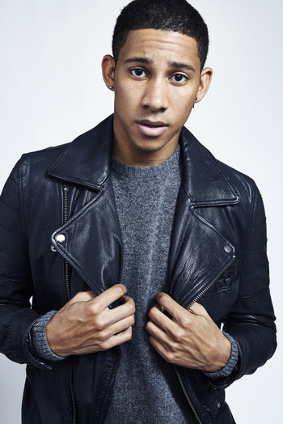
Wallace F. "Wally" West[1] (born 1995/1996) is the son of Joe and the late Francine West, and the younger brother of Iris West. He was a champion drag-racer under the alias "Taillights". He was born after Francine had separated with Joe, having left him and Iris, so he was brought up without a father or sister. He eventually met Joe, Iris, Joe's foster son Barry Allen and the rest of Team Flash, and became a member.In the alternate timeline known as Flashpoint, Wally West was the meta-human speedster known prominently as The Flash. As the protector of Central City, he fought against his archenemy The Rival. He later regained his speed in the post-Flashpoint timeline, donning the name Kid Flash. After defeating and detaining the criminal known as Plunder, he was embraced by Central City and officially became known as Kid Flash to all. He was tricked by Savitar via hallucinations to open a portal into the Speed Force, getting trapped in the Speed Force to replace him. He was later rescued by Barry Allen and Jay Garrick, who in turn took his place. He assisted Barry and Jay in the final battle against Savitar, successfully saving Iris. He became the boyfriend of Jesse Wells, only to be dumped after she became too busy on Earth Two.
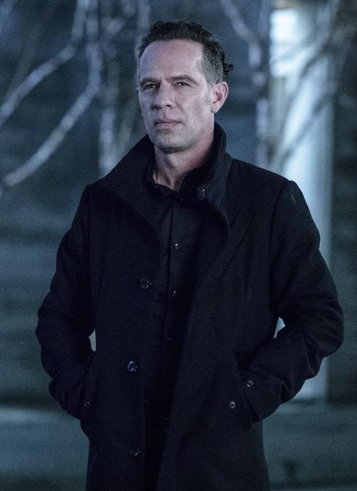
Clifford DeVoe (May 8, 1975[1] - May 22, 2018[2]), nicknamed The Thinker by Cisco Ramon, was a former history professor at Central City University, and a criminal mastermind who was also an extremely knowledgeable enemy of Barry Allen/The Flash. Before he lived in Central City he lived in South Africa.DeVoe worked alongside Marlize DeVoe, his now-estranged wife, and ex-partner-in-crime, whom he met at the University of Oxford. DeVoe eventually transferred his consciousness into the various "bus-metas", siphoning their respective powers into himself. He eventually managed to take control over the body of Ralph Dibny, whose powers made him immune to the negative effects that his ever-expanding mind was having on his body's physical well-being
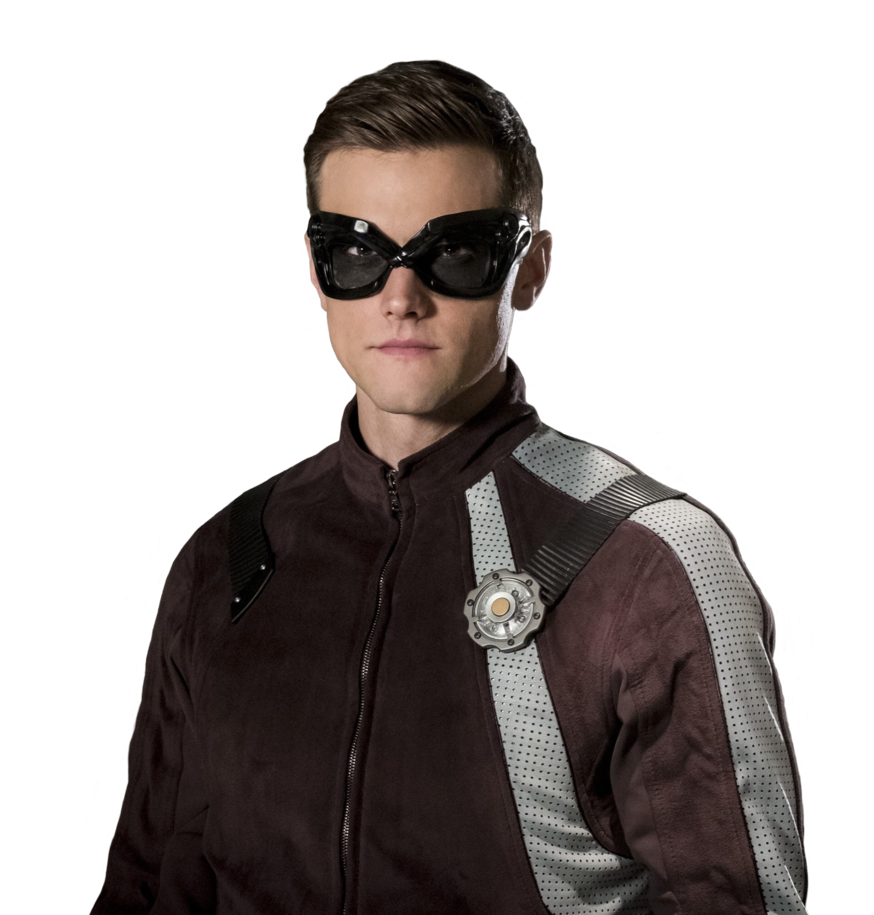
Ralph Dibny is a former police detective of the Central City Police Department and a private investigator. In the pre-Flashpoint timeline, he was presumed to be one of the seventeen people who lost his life during the S.T.A.R. Labs particle accelerator's explosion. However, Ralph reappeared alive in the post-Flashpoint timeline, gaining his powers due to exposure to dark matter from the Speed Force. Using these super powers, he began acting as a meta-human vigilante and the superhero, initially referred to by the media as the Stretchy Man, but shortly thereafter being named the Elongated Man by the same individuals.
Back to top
Back to home